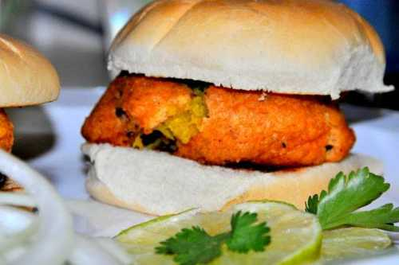

The local cuisine here is dominated by Maharashtrian food with a blend of South and North Indian cuisines. Hotel Vaibhav closest to MTDC resort offers a treat of traditional home styled cooked meals which has to be tried at least once.
The other restaurants nearby offer both vegetarian and non-vegetarian dishes with a dash of local flavour. Hotel Kaka is particularly known for it's cleanliness and exclusive Gujrati Thali.
Pravara Hotel near MTDC resort is equipped with alcohol both international and local brands.
